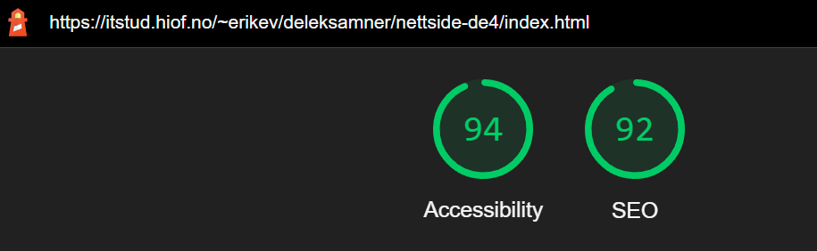
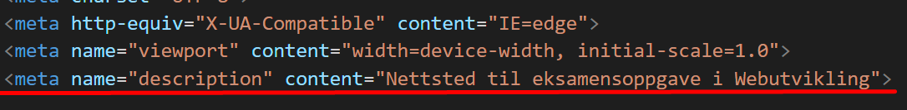
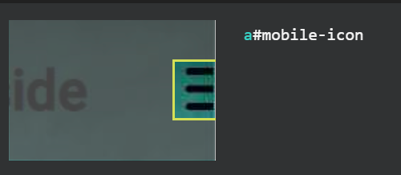
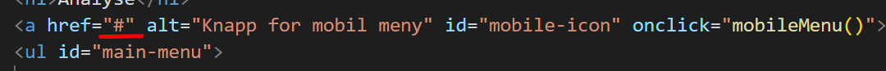

Analyse
Dette er en analyse av mitt eget nettsted.
Her skal jeg vurdere Universell Utforming vs Søkemotoroptimalisering og Heuristisk evaluering for å implementere endringer basert på resultatene i analysen.
Jeg har valgt å benytte meg av verktøyet Lighthouse for å gjennomføre analysen av nettstedet.
Når det gjelder den heuristiske evalueringen skal jeg se igjennom punktene opp mot nettstedet mitt.
SEO og UU
Da jeg skulle sette i gang med å vurdere tenkte jeg på prinsippet om “mobile-first”.
Jeg så for meg at flere av endringene jeg komme til å ende opp med å gjøre ville forbedre både nettstedet for mobile og deskop brukere.
Lighthouse
Jeg kjørte gjennom alle sidene og fant ut at alle sidene hadde like feil som kunne endres. Her er resultatet av endringene jeg gjorde.


Heuristisk evaluering
1. Visibility of system status
Jeg har skrevet hvilken nettside brukeren er på i headeren på alle nettsidene.
2. Match between system and the real world
Jeg har brukt ord, fraser og konsepter som er kjent hos brukeren i artiklene.
3. User control and freedom
Jeg har navigasjon i toppen av alle sidene som gir brukeren muligheten til å raskt komme seg frem og tilbake.
4. Consistency and standards
Jeg har brukt standarder og like ord for at brukeren skal kunne kjenne igjen betydningen.
5. Error prevention
På kontakt oss siden har en “send inn” knapp som må trykkes for å sende inn.
6. Recognition rather than recall
Alle sidene ser relativt like ut og bruker mye av det samme systemene og layoutene.
7. Flexibility and efficiency of use
Jeg har både navigasjon on artikel kort for rask bytting av sider.
8. Aesthetic and minimalist design
Jeg har kun informasjon på sidene som er relevant for sidens tema og et relativt minimalistisk design.
9. Help users recognize, diagnose, and recover from errors
Jeg har ikke funnet noen områder hvor error meldinger kunne vært i bruk.
10. Help and documentation
Det er enkelt å finne innholdet på alle sidene.
Tabell med endringer
Background and foreground colors do not have a sufficient contrast ratio
Før
Etter
Links do not have a discernible name
Før
Etter
Document does not have a meta description
Før
Etter

Links are not crawlable
Før

Etter

Tilgjengelighetserklæring
A-krav
1.3.1 Informasjon og relasjoner (Nivå A)
Ting skal være kodet som det ser ut som.
1.3.2 Meningsfylt rekkefølge (Nivå A)
Presenter innhold i en meningsfull rekkefølge.
1.4.1 Bruk av farge (Nivå A)
Ikke bruk presentasjon som bygger utelukkende på farge.
AA-krav
1.4.3 Kontrast (minimum, Nivå AA)
Kontrastforholdet mellom teksten og bakgrunnen er minst 4,5:1.
3.2.3 Konsekvent navigering (Nivå AA)
Navigasjonslinker som gjentas på flere sider skal ha en konsekvent rekkefølge.
3.2.4 Konsekvent identifikasjon (Nivå AA)
Elementer som har samme funksjonalitet på tvers av flere sider er utformet likt.
AAA-krav
2.1.3 Keyboard (No Exception) Level AAA
All functionality of the content is operable through a keyboard interface without requiring specific timings for individual keystrokes.
Link til AAA-krav
Excel tabell med tilgjengelighetserklæringen
Kilder
Heuristisk evaluering
WCAG-sjekkliste for utfylling av tilgjengelighetserklæring